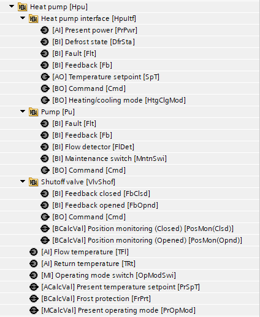
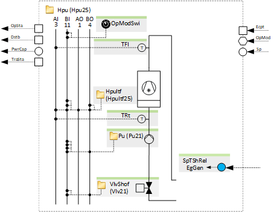
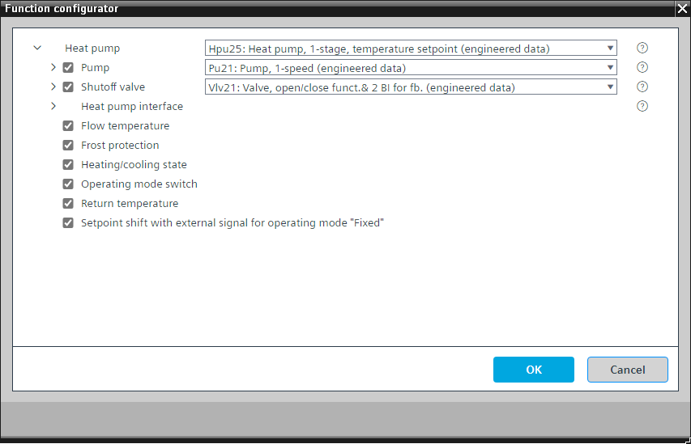

[Hpu25] 热泵，1 级，温度设定点
Program block, name / node subtype: [Hpu25] Heat pump, 1-stage, temperature setpoint
Library hierarchy: Heating equipment
Family: HGen
项目树 | 图表 |
|---|---|
|
 |  |
Configurator


程序块存储在没有 I/Os. 的库中 使用auto-create and auto-connect函数创建 I/Os 和 /or 将它们连接到接口块，例如 R_A、CMD_B。或者，从包含库中预定义 I/Os 的文件夹中取出 I/Os，并从工厂中取出 /or，并将它们连接到接口块。
使用自己的外部控制单元控制热泵。
热泵控制单元 (HpuItf25) 的接口启用它，发送设定值（它根据加热或冷却优先级信号而变化），并读取故障、反馈、除霜状态和当前功率的可选信号。
该程序具有热泵标称功率和打开或关闭时的瞬态时间（热泵处于瞬态状态的信号，该信号阻止为功率控制和补偿生成进一步升压和降压脉冲的逻辑）的设置（例如，打开时为 5 分钟，关闭时为 2 分钟）。
阀门、泵和控制单元接口的开启和关闭顺序在功能块 CMDSEQ_B 中定义。
该程序块具有以下可选功能：
Option: Pump (1xBO, 4xBI)
控制泵 (Pu21)。可以有不同的替代方案，例如 TwnPu21。
热泵运行时泵运行，并且可选截止阀打开。
Option: Shutoff valve (1xBO, 2xBI)
控制热泵运行时打开的截止阀 (Vlv21)。
Option: Flow temperature (1xAI)
创建流量温度的模拟输入并读取其信号。它可以产生警报（上限和下限）。
Option: Frost protection
如果热泵的出水温度和/or回水温度（进口）低于一定值，例如8°C，截止阀打开，水泵启动以确保水循环。
如果温度进一步下降，例如下降至 5°C，热泵控制接口将启用热泵并启动热泵。
Option: Heating/cooling state
通过 BACnet 读取程序另一部分中计算出的加热 /cooling 状态，并将其传递到热泵接口 (HpuItf25)。
Option: Operating mode switch (1xMI=2xBI)
读取操作模式开关的状态，通常位于电气面板的前面，状态为“自动”、“关闭”和“打开”。
Option: Return temperature (1xAI)
创建回水温度的模拟输入并读取其信号。它可以产生警报（上限和下限）。
Option: Setpoint shift with external signal for operating mode "Fixed"
带有自己的外部控制单元的热泵具有“固定”运行模式。操作模式“Fixed”位于“On”模式之后。它确保该热泵保持其标称功率，并且在调节后打开的另一个能量发生器保持主流温度。
另一个程序块 (HGenCtl22) 中的 PID 控制器将主流温度与其设定值进行比较，如果出现偏差，则增加其输出 (in %)。热泵可以读取该信号，并且如果其操作模式为“固定”，则会导致本地设定点增加，例如，0-100 % 将热泵的设定点增加 0-3 K）。这使热泵保持其标称功率并防止其调节。
姓名 | 描述 | 类型 | 报警/通知类 | 趋势/类型 | |
|---|---|---|---|---|---|
|
HpuItf | Heat pump interface | [HpuItf25] 热泵接口、启用和设定点输出 | N/A | N/A | |
PrSpT | Present temperature setpoint | ACalcVal: Analog calculated value | No | No | |
姓名 | 描述 | 类型 | 报警/通知类 | 趋势/类型 | |
|---|---|---|---|---|---|
Pu | Pump | N/A | N/A | ||
VlvShof | Shutoff valve | N/A | N/A | ||
TFl | Flow temperature | AI：模拟输入 | 是的，4 | 是的，2 | |
TRt | Return temperature | AI：模拟输入 | 是的，4 | 是的，2 | |
OpModSwi | Operating mode switch | MI：多态输入 | No | 是的，4 | |
FrPrt | Frost protection | BCalcVal: Binary calculated value | 是的，5 | No | |
必须禁用可选元素“反馈”（在程序块接口中）的预定义 I/O 的报警扩展。
描述 |
|---|
热泵运行模式的设定值随外部信号的变化（以 % 为单位） 固定 |